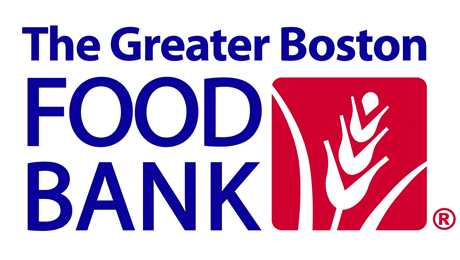
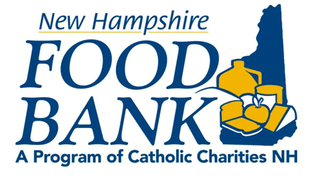
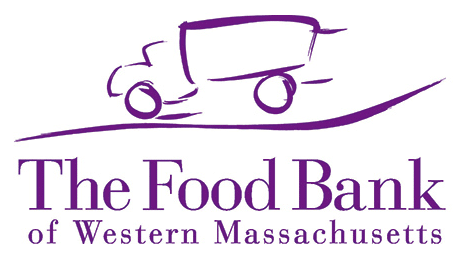
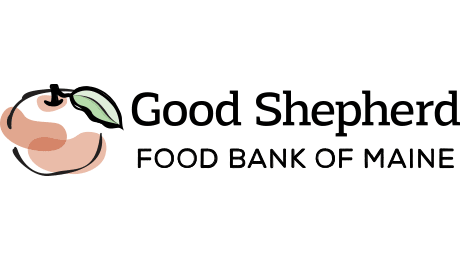
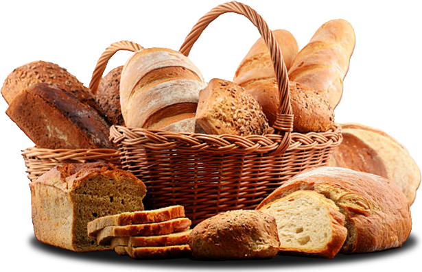

"Our company’s mission has always been to give back to our local communities and we see helping to relieve hunger across New England as part of that goal."
‘Doughnation’ Boxes &
Feeding America Our bakery-cafes located throughout New England, collected funds from customers through in-store canisters. PR Restaurants then matched a percentage of all funds donated by its customers.
This year, we donated a total of $76,050 to five New England Food Banks as part of our Feeding America initiative.
Feeding America Our bakery-cafes located throughout New England, collected funds from customers through in-store canisters. PR Restaurants then matched a percentage of all funds donated by its customers.
This year, we donated a total of $76,050 to five New England Food Banks as part of our Feeding America initiative.
- 
- 
-

- 
- 
We donated $29,500 to
The Greater Boston Food Bank The Greater Boston Food Bank (GBFB) is the largest hunger-relief organization in New England and among the largest food banks in the country. GBFB provides the equivalent of nearly 51 million healthy meals annually, distributed through its network of 500+ member agencies across Eastern Massachusetts. GBFB operates four direct service programs at nearly 70 sites throughout the area and serves more than 140,000 people every month in its goal to create a hunger-free Eastern Massachusetts. For more information, visit us at GBFB.org.
The Greater Boston Food Bank The Greater Boston Food Bank (GBFB) is the largest hunger-relief organization in New England and among the largest food banks in the country. GBFB provides the equivalent of nearly 51 million healthy meals annually, distributed through its network of 500+ member agencies across Eastern Massachusetts. GBFB operates four direct service programs at nearly 70 sites throughout the area and serves more than 140,000 people every month in its goal to create a hunger-free Eastern Massachusetts. For more information, visit us at GBFB.org.
We donated $17,000 to the
New Hampshire Food Bank The New Hampshire Food Bank, a program of Catholic Charities New Hampshire, has been working to relieve hunger since 1984. The New Hampshire Food Bank receives no federal or state funding for food distribution. In 2018, as the state’s only Food Bank, the New Hampshire Food Bank efficiently procured and distributed 13.7 million pounds of food to people in need through more than 425 non-profit registered agencies including food pantries, neighborhood centers, low-income housing sites, senior nutrition centers, family crisis centers, hospices, soup kitchens, emergency shelters, after school programs, and day care centers. For more information, please visit www.nhfoodbank.org.
New Hampshire Food Bank The New Hampshire Food Bank, a program of Catholic Charities New Hampshire, has been working to relieve hunger since 1984. The New Hampshire Food Bank receives no federal or state funding for food distribution. In 2018, as the state’s only Food Bank, the New Hampshire Food Bank efficiently procured and distributed 13.7 million pounds of food to people in need through more than 425 non-profit registered agencies including food pantries, neighborhood centers, low-income housing sites, senior nutrition centers, family crisis centers, hospices, soup kitchens, emergency shelters, after school programs, and day care centers. For more information, please visit www.nhfoodbank.org.
We donated $13,500 to the
Worcester County Food Bank Worcester County Food Bank (WCFB) distributes over 6 million pounds of donated food in partnership with food donors, financial supporters, and volunteers. WCFB provides food to a network of 118 Partner Agencies including food pantries, community meal sites, and shelters. WCFB also advocates within the community and at the state and federal levels for systemic and sustainable solutions to the problem of hunger. WCFB’s mission is to engage, educate, and lead Worcester County in creating a hunger-free community. Ninety-four percent of all donated resources go directly towards that goal. To learn more, visit www.foodbank.org.
Worcester County Food Bank Worcester County Food Bank (WCFB) distributes over 6 million pounds of donated food in partnership with food donors, financial supporters, and volunteers. WCFB provides food to a network of 118 Partner Agencies including food pantries, community meal sites, and shelters. WCFB also advocates within the community and at the state and federal levels for systemic and sustainable solutions to the problem of hunger. WCFB’s mission is to engage, educate, and lead Worcester County in creating a hunger-free community. Ninety-four percent of all donated resources go directly towards that goal. To learn more, visit www.foodbank.org.
We donated $10,700 to
The Food Bank of Western Massachusetts The Food Bank of Western Massachusetts provides individuals facing hunger with the food they need to survive and leads communities towards long-term solutions to the problem of hunger in our region. Serving Berkshire, Franklin, Hampden and Hampshire counties, The Food Bank is the leading provider of emergency food that reaches individuals and families in need. They are committed to ensuring that everyone has access to healthy food, regardless of their circumstances. For more information on how you can get involved in your community, visit www.foodbankwma.org.
The Food Bank of Western Massachusetts The Food Bank of Western Massachusetts provides individuals facing hunger with the food they need to survive and leads communities towards long-term solutions to the problem of hunger in our region. Serving Berkshire, Franklin, Hampden and Hampshire counties, The Food Bank is the leading provider of emergency food that reaches individuals and families in need. They are committed to ensuring that everyone has access to healthy food, regardless of their circumstances. For more information on how you can get involved in your community, visit www.foodbankwma.org.
We donated $5,350 to
Good Shepherd Food Bank As the largest hunger relief organization in Maine, Good Shepherd Food Bank distributes nutritious food to more than 400 partner agencies across the state, including food pantries, meal sites, schools, and senior programs. Together with its network, the Food Bank leads a statewide effort to combat the root causes of hunger by engaging in advocacy, nutrition education, targeted interventions, and strategic partnerships. In 2018, the Food Bank distributed 24 million meals to families, children, and seniors in need throughout Maine. To learn more, visit www.feedingmaine.org.
Good Shepherd Food Bank As the largest hunger relief organization in Maine, Good Shepherd Food Bank distributes nutritious food to more than 400 partner agencies across the state, including food pantries, meal sites, schools, and senior programs. Together with its network, the Food Bank leads a statewide effort to combat the root causes of hunger by engaging in advocacy, nutrition education, targeted interventions, and strategic partnerships. In 2018, the Food Bank distributed 24 million meals to families, children, and seniors in need throughout Maine. To learn more, visit www.feedingmaine.org.
"We hope these donations will help our New England Food Bank partners and Feeding America continue their tremendous work to alleviate hunger across the region and the country."

Baked Goods Donations
In addition, at the end of the day our leftover baked goods are donated to local non-profits. This type of support helps us stay connected to the communities in which we operate, and is an important way that we, as a company, give back to the communities that support us
Community Events
Our cafés also participate individually in community events and local fundraisers, like the UMass Cancer Walk & Run in Worcester, MA, the CelebratePink 5K Run and Walk in Portsmouth, NH, and the Walk to END Alzheimer’s, providing food and beverages, funding, and volunteers.